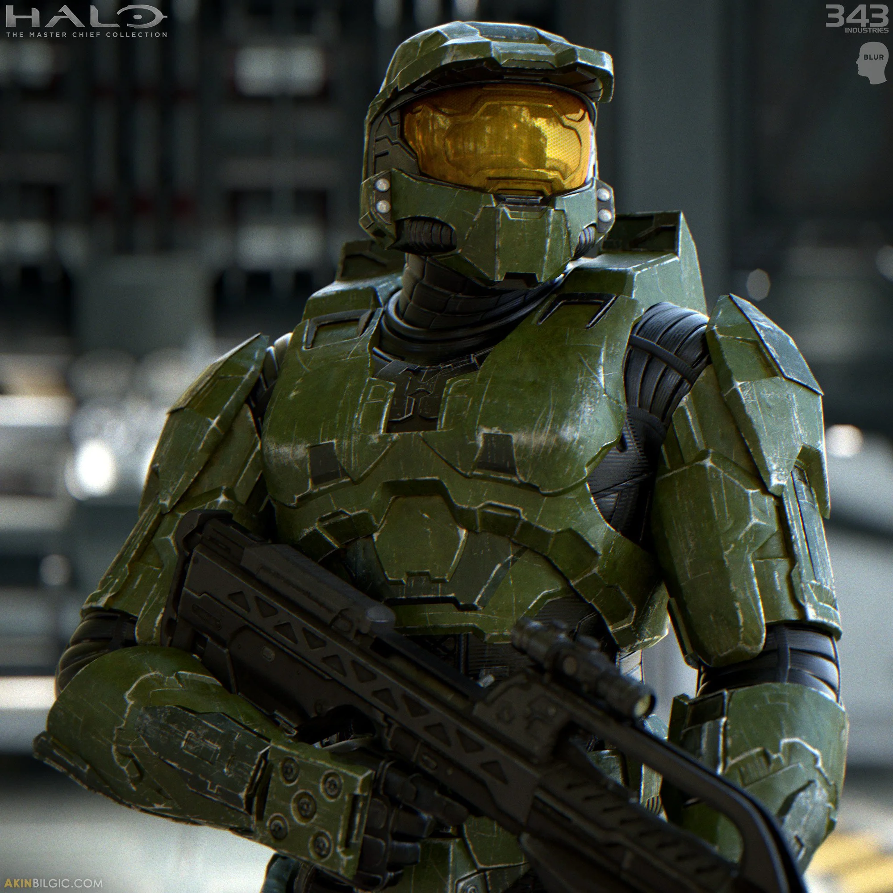

JOHN 117, THE MASTER CHIEF
OVERVIEW
- Name: Master Chief(John-117)
- Role: Super-soldier in a futuristic military
- Mission: Protect humanity from alien threats
- Traits: Brave, skilled, and always in his iconic green armor
- Companion: Often works with an AI named Cortana
- Master Chief, also known as John-117, is the central figure in the Halo series. Taken from his family at a young age, he was trained and enhanced as part of the Spartan-II program to become a super-soldier. Clad in his iconic green MJOLNIR armor, he has faced numerous alien threats, including the Covenant and the Flood, always with unwavering determination and skill. His AI companion, Cortana, has been a crucial ally in his missions. Throughout his journey, Master Chief remains a symbol of resilience and heroism, dedicated to protecting humanity against overwhelming odds.
DOWNLOAD THE MANUAL THAT CAME WITH THE REMASTER OF THE FIRST HALO GAME EVER!!! CLICK HERE
Why I Choose My Topic
Master Chief, the central character in the Halo series, epitomizes heroism, selflessness, and discipline. Choosing him as my topic showcases a figure who consistently risks everything for the greater good, embodying the ultimate soldier’s qualities. His journeys through alien landscapes and epic battles not only highlight his tactical prowess but also his unwavering moral compass. The narratives of his adventures are legendary, filled with intense moments of struggle and triumph that have captivated fans for years. Master Chief isn't just a character; he’s a symbol of resilience and dedication, making him a perfect choice for any discussion on true heroism.
LEARN THE HISTORY OF THE HALO FRANCHISE THROUGH THE OFFICIAL HALOPEDIA CLICK HERE!!!